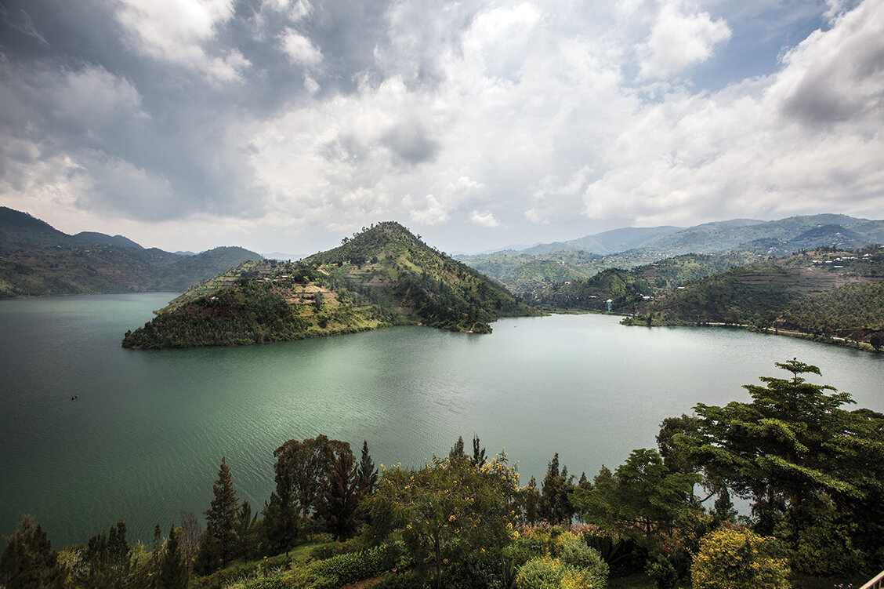

Озеро Киву

На берегах этого африканского озера проживают около двух миллионов человек. Каждый день эти люди купаются в горячих источниках, даже не задумываются о том, что их живописный водоём может превратиться в смертельно опасного монстра. Оно входит в тройку самых опасных африканских водоёмов, способных производить масштабные озерные извержения. Согласно исследованиям, на его дне скрывается около 65 куб.км. метана и 256 куб.км. углекислого газа, которые в совокупности способны вызвать глобальную катастрофу. Спусковой механизм для стихийного бедствия до сих пор неизвестен, но ученые предполагают, что угроза может идти со стороны вулканов.
Далее